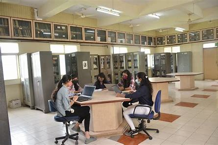

Welcome to the Computer Science Department
This is the Information Technology age and at its core is Computer Science. The study of computer science is therefore critical if society is to take full advantage of the benefits Information Technology has to offer and make rapid economic advances. Computer science involves the study and development of applications that allow for our everyday use of computers, the software systems that support these applications, and the means and methods used to produce both applications and systems that behave reliably, correctly and ethically. At the heart of Computer Science lies the skill of computer programming and employers who hire Computer Scientists expect adept programmers with knowledge of current techniques and tools and the ability to apply sound engineering principles to the development, construction and maintenance of computer programs.
The range of courses available in the department and the skills acquired by students enable them to find employment in many diverse fields of the economy and prepare our graduates for the computing industry, working in a project team (or research and development team), and to enable the graduate to bring specialist skills to that team. The course also provides the platform for further study or research through exposure to established and emerging technologies and methods, and to active fields of research in Computer Science.
The Department offers two undergraduate degree programmes, Bachelor of Science in Computer Science Single-Major (3:2:1:1) and Major-Minor (3:2:2:1) as well as Bachelor of Science in Information Technology.

LExperience a UG-CDCD classroom from wherever you are. Take advantage of real-time lectures and personal interaction with professors through a suite of online delivery options, customizing your degree to fit your schedule. Our online classroom maintains the same level of academic rigor, while providing students with more ways of learning.

The University of Ghana is one of the Africa's most preeminent public universities. Our impact on individuals, our region and the world is profound. whether we are launching young people into a boundless future or confronting the grand challenges of our time through dauntless research. UG educates more than 38,000students annually, with approximately 2.64% being computer science students. We turn ideas into impact and transform the world around us. For more about our impact, visit our news site, UG News.